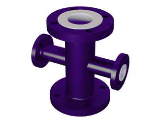

PTFE Lined Unequal Cross
A four-way connection with reduced branches.
A lined unequal cross joins four lines at one point where the branches are smaller than the main run.

Built for corrosive service.
A lined unequal cross joins four lines at one point where the branches are smaller than the main run.
Every Antico lined component is made in-house to your approved drawing and inspected before dispatch. Catalogue pages 34–35 of our product catalogue.
What you get with this product.
Corrosion barrier through the full bore
A continuous fluoropolymer liner separates the carbon steel shell from the process media.
Matches your lined line
Fittings use the same flange standard and lining options as our lined pipes, so the whole line works together.
Made to your isometric
Fitting lists and face-to-face dimensions are confirmed against your drawing before manufacture.
Size range
NB 1/2” to NB 16”. Larger or special sizes can be made on request.
Choice of lining
Available in PFA / FEP, depending on size. Confirm the right one for your media with our engineers.
Materials and specification.
Materials follow the standards listed here. Alternatives are available on request.
Flanges
- IS 2062 Plates/ASTM A 105
Cross
- ASTM A 106 Gr. B
Cast Cross
- SG Iron
Liner
- ASTM D 3307
- ASTM D 4894-19
Choose a size and see its dimensions.
Dimensions come from our product catalogue. Final dimensions are confirmed in writing before manufacture.
View the full size table 38 sizes
Dimensions in mm unless stated. “•” = lining available for that size.
Match the lining to your media.
Final choice depends on the chemical, temperature and pressure of your process. Tell us your duty conditions and our engineers will recommend the right lining.
Polytetrafluoroethylene
Virgin or anti-static*, in compliance with ASTM D4894 and D4895.
Not offered on this productPerfluoroalkoxy
Virgin or anti-static*, in compliance with ASTM D3307.
Available on this productFluorinated ethylene propylene
Virgin or anti-static*, in compliance with ASTM D2116.
Available on this product* Conductive black PTFE or PFA.
Handle with care, fit with care.
General good practice for lined equipment. Follow the installation advice supplied with your order where it differs.
- 01
Inspect on arrival
Check the lined faces and flanges for damage. Report any problem before installation.
- 02
Keep the covers on
Leave the protective face covers in place until the moment of fitting, to keep the liner clean and undamaged.
- 03
Align the flanges
Bring mating flanges into line and parallel. Do not pull misaligned pipework together with the bolts.
- 04
Fit the correct joint
Use the gaskets and mating flange faces specified for the joint.
- 05
Tighten evenly
Tighten bolts in a cross pattern and in stages, to the recommended torque.
- 06
No heat or welding near lined parts
Do not weld, grind or heat the pipework once it has been lined, as this can damage the liner.
- 07
Test before commissioning
Pressure-test the installed line and bring it up to temperature gradually, to avoid thermal shock.
Tested before it reaches your plant.
Every lined component passes through inspection before dispatch. Certificates and test documents are available for review.
Dimensional & visual inspection
Checked against approved drawings on every lined component.
Hydrostatic & pneumatic testing
Pressure testing performed on every lined component.
Spark testing
High-voltage testing confirms complete liner integrity.
Coating inspection
Coating and lining thickness and coverage verified on every component.
Certificates & reports
Quality management certificate, material test certificates, inspection and test reports, statutory registrations.
Common questions.
What is the PTFE Lined Unequal Cross used for?
A lined unequal cross joins four lines at one point where the branches are smaller than the main run.
What size range is available?
NB 1/2” to NB 16”. Larger or special sizes can be made on request.
Which lining materials are available?
PFA, FEP. Availability can depend on size, so check the size table above. Our engineers can help you match the lining to your media, temperature and pressure.
What is it made from?
Flanges: IS 2062 Plates/ASTM A 105; Cross: ASTM A 106 Gr. B; Cast Cross: SG Iron; Liner: ASTM D 3307, ASTM D 4894-19.
What else can be supplied on request?
Flange Connection (1 fixed and 3 loose flange, 4 loose flanges); Stainless Steel Body; ANSI B16.5 Class 300 Flanges.
Can I order a size or version that is not listed?
Yes. Send us your drawing and requirements through the quote form, and our engineers will confirm what we can make.
How do I get a quotation?
Use the Add to Quote button on this page, or send us your line drawing, fluid data and duty conditions through the quote form.
Need the PTFE Lined Unequal Cross for your line?
Tell us the media, temperature, pressure and sizes. Our engineers will confirm the right lining and components.